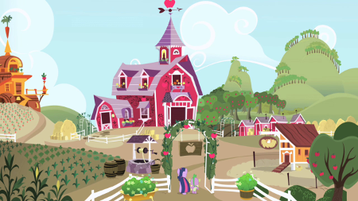

|
Applejack est un poney terrestre femelle et l'un des personnages principaux de My Little Pony : Les amies, c'est magique. |
 |
 |
Elle vit et travaille comme agricultrice dans un verger de pomme à Sweet Apple Acres. |
|---|---|
| Elle vit avec sa grand-mère Granny Smith, son frère aîné Big McIntosh | |
 |
et sa petite sœur Apple Bloom. |
| Elle est la représentation de l'élément d'harmonie de l'Honnêteté et sait faire preuve d'un grand altruisme envers les autres poneys. |  |
 |
C'est la marque de Applejack qui symbolise son attachement à la vie à la Ferme de la Douce Pomme. Elle explique aux chercheuses de talents comment elle avait quitté Poneyville pour se rendre à Jumanhattan chez son oncle et tante Orange. |
|---|---|
| Elle pensait qu'en vivant comme eux en ville, elle aurait sa marque de beauté mais au final, après avoir contemplé un magnifique arc-en-ciel depuis la fenêtre de chez oncle et tante Orange, elle se rendit compte que sa place n'était pas au milieu de tout ces poneys supers sophistiqués et élégants, mais à Poneyville. Elle retourna donc chez elle, à la Ferme de la Douce Pomme et reçu sa marque alors qu'elle courait vers son chez-soi. |